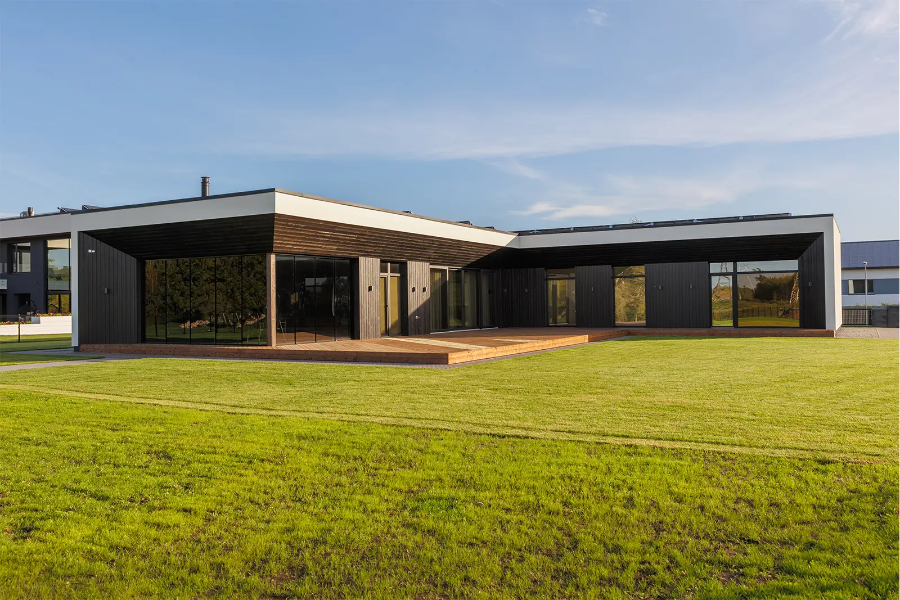
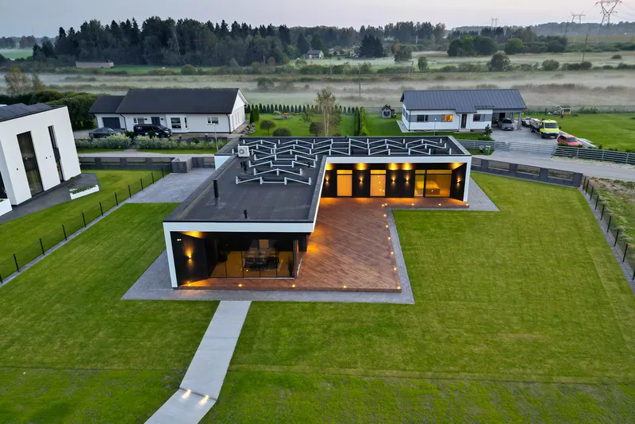
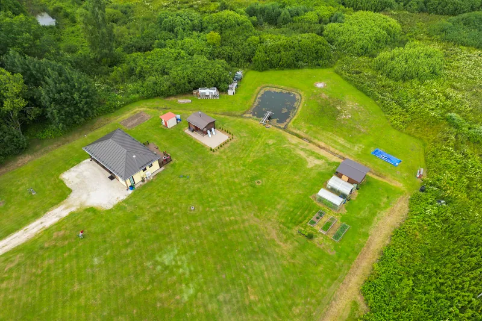
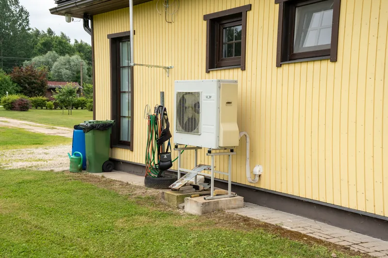
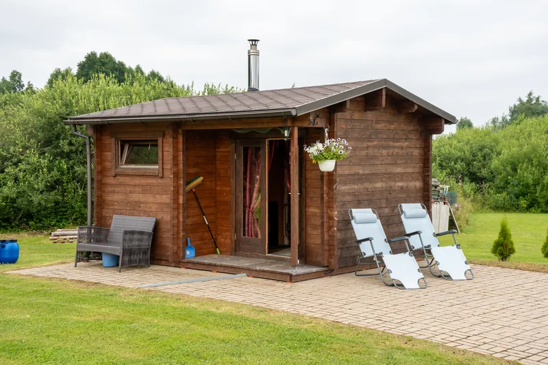

Lühivastus
Korteri müüb ära interjöör, maja müüb ära välisfoto. Pildista maja kolmveerandnurga alt, päikesega selja taga, tühja sissesõiduteega – ja lisa juurde krunt, kõrvalhooned ja tehnika, sest just neid maja ostja otsib.
Korteriostja otsib portaalis eelkõige ruume. Majaostja otsib midagi laiemat: maja, krunti, ümbrust ja seda, mis seisus kogu asi on. Seepärast on maja kuulutuses esimene välisfoto sisuliselt kogu kuulutuse pealkiri.
Kõige levinum majafoto on tehtud otse fassaadi vastu, tänavalt. Tulemus on lame: maja näeb välja nagu kaardimaja ja sügavust ei teki.
Astu selle asemel nurga alla, nii et kaadrisse jääb korraga kaks külge – peafassaad ja üks otsasein. Nii on kohe näha, kui sügav maja on ja mis kuju tal on. See üks samm parandab majafotot rohkem kui ükski töötlus.

Sisefotod tulevad kõige paremini keskpäeval. Välisfotod mitte. Maja fassaad tahab valgust endale, mitte enda taha – ja millal see juhtub, sõltub sellest, mis ilmakaarde peasissepääs jääb.
| Fassaad vaatab | Parim aeg |
|---|---|
| Itta | hommik |
| Lõunasse | keskpäev ja varane pärastlõuna |
| Läände | pärastlõuna ja õhtu |
| Põhja | pilves päev või varahommik – otsest päikest sinna ei tulegi |
Pilves ilm ei ole katastroof. Ühtlane valgus on fassaadidele isegi lahke – ta ei tekita kõvasid varje ega musti räästaaluseid. Halb on ainult see, kui taevas jääb kaadris valgeks laiguks. Sellest saab jagu, kui hoida horisont madalal ja anda taevale kaadris vähem ruumi.
Kui majal on suured aknad, tasub üks kaader teha pimeneval ajal, kui sisevalgus on aknast soojalt näha ja taevas on veel sinine. See on ainus foto, mille peale inimesed kuulutust kerides päriselt peatuvad.
Ajaaken on lühike – umbes 20 minutit pärast päikeseloojangut. Selle jaoks peavad kõik tuled majas põlema ja kardinad lahti olema.

Ja kaks asja, mis tuleb ära teha, mitte ära viia: muru niita ja lehed riisuda. Niitmata muru loeb ostja alateadlikult „maja pole hoitud“ – ka siis, kui katus on aasta vana.
See on koht, kus maja kuulutused kõige sagedamini vajaka jäävad. Maja fotod on olemas, aga krundist ei saa mingit ettekujutust: kui suur ta on, mis kuju, kus jooksevad piirid, mis on naabrite ja mis sinu.
Just seda küsimust lahendab droonifoto kõige otsesemalt – üks kaader ülevalt vastab korraga sellele, millele kümme maapealset ei vasta. Droonist ja selle reeglitest kirjutasime pikemalt siin.

Majaostja küsimused on väga praktilised. Iga küsimus, millele kuulutus vastab, on üks kõne vähem ja üks tõsisem huviline rohkem:


Majas on tubasid rohkem ja nende omavaheline paiknemine on ostja jaoks segasem kui korteris. Seepärast tasub majas teha rohkem „läbi ukse“ kaadreid, kus ühest ruumist paistab järgmine. Nii tekib maja plaanist ettekujutus ka ilma korruseplaanita.
Ülejäänud interjöörireeglid on samad, mis korteris: päevavalgus, laelambid välja, kaamera loodis, nurgast pildistatud. Need on kirjas vigade artiklis.
Eramaja pildistamine algab 109€-st. Suurema maja paketis on droonivõtted sees. Vaata tehtud töid või küsi pakkumine.
Vaata hindu